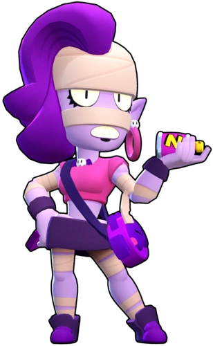

¿Quién es Emz?
En teoría, Emz trabaja en la funeraria de su tío Mortis, pero rara vez aparece por allí. Ser "influencer" en redes sociales y promocionar su laca para el pelo ya es bastante trabajo.
Emz es una Brawler Épica que tiene salud moderada y una alta potencial de daño. Su ataque es un disparo amplio de laca para el cabello que causa daño a lo largo del tiempo y causa el mayor daño si el enemigo está en medio del ataque. Su súper crea una nube temporal en un gran radio a su alrededor que ralentiza e inflige daño con el tiempo a los enemigos que se encuentran dentro de ella.
|  |
NIVEL DE FUERZA 11 |
Sus gadgets
ESPACIO PERSONAL: Emz empuja hacia atrás a todos los rivales cercanos e inflige 676 puntos de daño. |
LACA LETAL: La siguiente explosión de laca de Emz puede atravesar los muros, pero inflige un 10% menos de daño. |
Sus habilidades estelares
 |
LACA LETAL: Los rivales que permanecen dentro del área de efecto del aerosol de Emz sufren cada vez más daño 25% más por impacto |
 |
AUTOBOMBO: Emz recupera 576 puntos de salud por segundo por cada brawler rival que se encuentre dentro del área de efecto de su súper. |
Su hipercarga
NEBLINA NOCIVA: Cuando activa el súper, Emz empuja a los enemigos hacia la parte exterior de la nube tóxica y los rocía con una buena dosis de laca. |
 Braian Arancibia
Braian Arancibia Aya El Baarar
Aya El Baarar